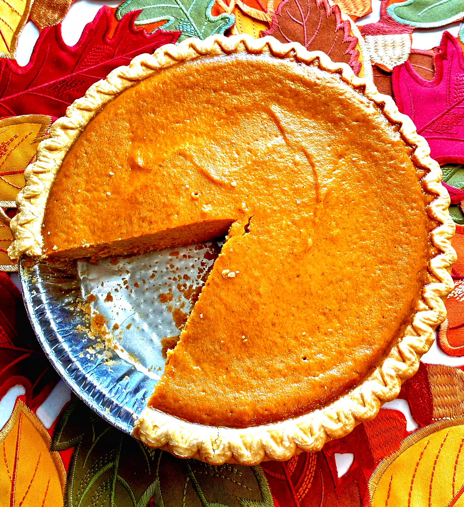

Sweet Potato Pie I

Description:
This recipe was shared with me by a special friend in Atlanta, GA. It has long been a favorite, and everyone who tastes it says it is the best they have ever had.
Ingredients
- 1 pound sweet potato
- 1/2 cup of butter
- 1 cup white sugar
- 1/2 cup milk
- 2 eggs
- 1/2 teaspoon ground nutmeg
- 1/2 teaspoon ground cinnamon
- 1 teaspon vanilla extract
- 1 unbacked pie crust
Steps
- Boil sweet potato whole in skin for 40 to 50 minutes, or until done. Run cold water over the sweet potato, and remove the skin.
- Break apart sweet potato in a bowl. Add butter, and mix well with mixer. Stir in sugar, milk, eggs, nutmeg, cinnamon and vanilla. Beat on medium speed until mixture is smooth. Pour filling into an unbaked pie crust.
- Bake at 350 degrees F (175 degrees C) for 55 to 60 minutes, or until knife inserted in center comes out clean. Pie will puff up like a souffle, and then will sink down as it cools.
go back